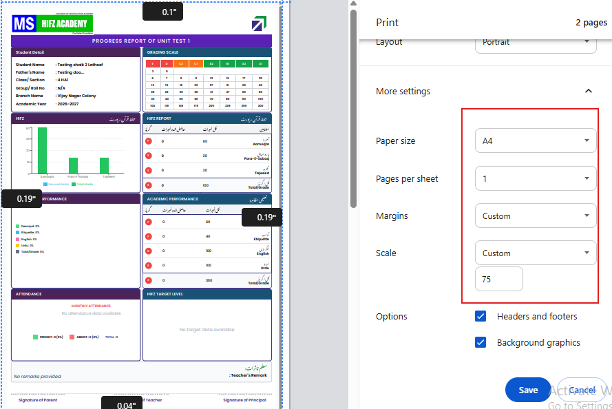

MS HIFZ ACADEMY ERP — Academic Module
← Back to Home
Academic Module
This document covers the complete workflow for managing academics in the MS Hifz Academy ERP — from creating subjects and test types, to assigning subjects and tests to classes and students, entering marks, configuring grading scales, setting exam attendance, and generating student report cards.
Login to the Portal
- Open a web browser and navigate to the MS Hifz Academy ERP portal URL.
- Enter your Username and Password, then click Login.
- The main Dashboard will open. From the Branch Selector in the top header, select the required branch.
- You can also select All Locations to manage data across all branches.

Dashboard — After login, select the required Branch from the top header, then click on Academic in the left sidebar.
Navigate to Academic Module
- In the left sidebar, click on Academic.
- The Academics Management screen opens.
- The top navigation bar shows the following menus:
- Enter Marks — For entering or uploading student marks.
- Config — Configuration settings.
- Academic Actions — For assigning subjects, tests, and setting exam attendance.
- Masters — For creating subjects, test types, adding exams, and grading.
- Reports — For generating student report cards and academic reports.

Academic Module — Top navigation showing Enter Marks, Config, Academic Actions, Masters, and Reports menus.
Step 1 — Create Subjects (Subject Master)
Subjects are the foundation of the academic module. All subjects used across all branches are created here.
- Click on the Masters dropdown in the top navigation.
- Click on Subjects.
- The Subject Master screen opens, showing all existing subjects.
- To create a new subject:
- Enter the Subject Name in the input field (e.g., Hadees, Mathematics, English).
- Select the Subject Group from the dropdown:
- Academic — For standard school subjects (English, Hindi, Mathematics, Telugu, etc.)
- Hifz — For Islamic / Hifz subjects (Quran, Deoniyath, Islam, Hadees, etc.)
- Click Add Subject.
- The new subject appears in the subjects list below with its Group, Status, and Action buttons.
ⓘ
Important Rules for Subject Master:
- Subjects are created for the entire Academic Year and apply to ALL branches — not per individual branch.
- When the subject Status is Active, only then can it be assigned to classes.
- A subject cannot be deleted once it is assigned to any branch or class.
- Subject Master is accessible only by Admin credentials.

Subject Master — Enter Subject Name, select Group (Academic / Hifz), then click Add Subject. Active subjects appear in the list below.
Step 2 — Assign Subjects to Classes
After creating subjects, assign them to the relevant classes for each branch.
- Click on Academic Actions dropdown in the top navigation.
- Click on Assign Class Subjects.
- The Class-Subject Assignment screen opens.
- Set the filters:
- Academic Year (e.g., 2025–2026)
- Branch (e.g., Murad Nagar)
- Subject Group — Select Academic or Hifz
- A grid appears with Subjects as rows and Classes as columns.
- Check the checkbox at the intersection of a Subject and Class to assign that subject to that class.
- Use the ✓ All column header checkbox to assign a subject to all classes at once.
- Use the Check/Uncheck All button on each subject row to quickly assign or remove all classes.
- Click Save Assignments to save.
ⓘ Repeat this step for both Academic and Hifz subject groups by changing the Subject Group filter.
ⓘ To copy the same subject-class assignments to other branches, click Copy to Branches at the bottom left, select the target branches, and confirm.

Assign Class Subjects — Check boxes at Subject × Class intersections to assign. Click Save Assignments when done. Use Copy to Branches to replicate to other branches.
Step 3 — Assign Subjects to Students
After assigning subjects to classes, individually assign which subjects each student will study.
- Click on Academic Actions dropdown.
- Click on Assign Student Subjects.
- The Assign Student-Subjects screen opens.
- Set the filters:
- Academic Year
- Branch
- Class (e.g., 6)
- Section (e.g., A)
- Subject Type — Select Academic or Hifz using the radio buttons.
- The student list for the selected class/section appears with subject columns.
- Check the subject checkbox(es) for each student to assign that subject to them.
- Use the column header checkboxes to assign a subject to all students at once.
- Use the All column to assign all subjects to a student in one click.
- Click Save Assignments.
- Students are now eligible to write the subject test.
ⓘ A student must be assigned a subject here before they can be assigned to a test for that subject (Step 6). If a student is not assigned to a subject, they will not appear in the marks entry for that subject.

Assign Student Subjects — Select Class, Section, Subject Type. Check subject boxes per student. Click Save Assignments. Students are now eligible to write subject tests.
Step 4 — Create Test Types
Test Types define the different types of assessments conducted during the academic year (e.g., FA-1, SA-1, Unit Test, Quarterly).
- Click on the Masters dropdown in the top navigation.
- Click on Create Test.
- The Create-TestType screen opens showing all existing test types.
- Click + Add Test Type button (top right).
- The Add Test Type dialog opens. Fill in:
- Test Name — Enter the test name (e.g., FA-1, Unit Test-1, Summative Assessment-2, Quarterly).
- Max Marks (Ref) — Enter the reference maximum marks for this test (e.g., 50, 100).
- Display Order — Set the order in which tests are conducted (leave blank for auto-increment).
- Click Save.
- The new test type appears in the list with its Order, Test Name, Max Marks, Status (Active), and Edit action.
ⓘ Create Test Type is accessible only for Admin credentials.
ⓘ The Max Marks set here is a reference value. The actual marks per subject are set when assigning subjects to tests (Step 5B).

Create Test Type — Masters → Create Test → Click + Add Test Type. Enter Test Name and Max Marks, then click Save.
Step 5 — Assign Tests to Classes (Add Exam)
After creating test types, assign which tests are conducted for each class.
- Click on the Masters dropdown in the top navigation.
- Click on Add Exam.
- The Assign Tests to Classes screen opens, showing a grid of Classes × Test Types.
- The filters auto-populate with the current Academic Year and Branch.
- In the grid:
- Rows = Classes (4, 5, 6, 7, 8, etc.)
- Columns = Test Types (FA-1, SA-1, Unit Test-1, Quarterly, etc.)
- Check the checkbox at the intersection to assign that test to that class.
- In the checkbox, you can also enter the Order (sequence number) for how the test is conducted within that class (e.g., 1, 2, 3, 4).
- After selecting all required class-test combinations, click Save Test.
- After saving, you can proceed to assign subjects to tests (Step 5B).
ⓘ Click Copy to Branches at the bottom left to replicate the same test assignments to other branches.

Add Exam — Grid of Classes × Test Types. Check the boxes and set order numbers. Click Save Test when done.
Step 5B — Assign Subjects to Tests
After assigning tests to classes, specify which subjects are included in each test and set their individual max marks.
- This screen opens automatically after saving tests in Step 5, or navigate to Academic Actions → Assign Subject Tests.
- Set the filters:
- Academic Year
- Branch
- Class (e.g., 6)
- Test (e.g., Formative Assessment – 2)
- Subject Type — All Types / Academic / Hifz
- The screen shows the Test Max Marks (total reference marks for this test) at the top left.
- The subject list shows all subjects assigned to this class (Step 2), with columns: Subject Name, Type, Assigned (checkbox), Max Marks, Order.
- For each subject to include in this test:
- Check the Assigned checkbox.
- Enter the Max Marks for that subject (e.g., English = 10, Hindi = 10, Mathematics = 10).
- Enter the Order in which the subject appears on the report card (e.g., 1, 2, 3, 4, 5, 6).
- The Total Assigned (sum of all subject max marks) must equal the Test Max Marks.
- Click Save Assignments.
ⓘ Rule: Total of all Subject Max Marks = Total Test Max Marks. For example: if FA-1 has 50 total marks and 6 subjects, distribute the 50 marks across the subjects (e.g., English 10 + Hindi 10 + Islam 5 + Mathematics 10 + Quran 5 + Telugu 10 = 50).
ⓘ This tab is accessible only for Admin credentials.
ⓘ Click Copy Structure (top right) to copy the same subject-test mapping to other tests or classes.

Assign Subjects to Test — Check subjects, enter Max Marks and Order per subject. Total assigned marks must equal Test Max Marks. Click Save Assignments.
Step 6 — Assign Tests to Students
After assigning tests to classes, specify which students in each class are assigned to each test.
- Click on Academic Actions dropdown.
- Click on Assign Test to Students.
- The Assign Test to Students screen opens.
- Set the filters:
- Academic Year
- Branch
- Class (e.g., 6)
- The student list for the class appears with test columns (FA-1, Formative Assessment-2, etc.).
- Check the checkbox for each student under the test(s) they are assigned to write.
- Students not checked for a test will not appear in the marks entry for that test.
- Click Save Assignments.
- Tests are now assigned to the selected students.
ⓘ New students enrolled after the initial assignment will need to be assigned to tests manually from this screen.

Assign Test to Students — Student list with test columns. Check the test checkbox for each student. Click Save Assignments.
Step 7 — Configure Grading Scale
Grading scales define how numerical marks are converted to letter grades on the report card.
7A — Create a Grade Scale
- Click on the Masters dropdown.
- Click on Grading.
- The Grade Scale Master screen opens. Existing scales are listed in the Grade Scale List below.
- To create a new scale, fill in the left panel:
- Scale Name — Enter a name (e.g., GradeScale-20 Marks, GradeScale-100 Marks).
- Total Marks — Enter the total marks this scale applies to (e.g., 20, 50, 100).
- Scale Description — Optional description.
- Click Save. The new scale appears in the Grade Scale List.

Creating Grading Scale — Enter scale name, total marks, and description.
7B — Add Grades to the Scale
- In the Grade Scale List, click the Edit (pencil) icon next to the scale you created.
- The right panel shows the Grade Scale Details with a table of grades.
- Click the + button to add a new grade row.
- For each grade, enter:
- Grade — Letter grade (e.g., A1, A2, B1, B2, C, D, E).
- Min — Minimum marks to achieve this grade.
- Maximum — Maximum marks for this grade range.
- Description — Optional label (e.g., Excellent, Good, Pass).
- Add all grade rows covering the full range from 0 to Total Marks.
- Click Update or Save to save the grade scale.
- These grades will reflect automatically based on the marks entered for each student.
ⓘ Example grade scale for 20 marks: E (0–6), D (7–9), C (10–11), B2 (12–13), B1 (14–15), A2 (16–17), A1 (18–20).
ⓘ The system automatically assigns the correct grade to a student based on their entered marks and this scale during marks entry.

Grading — Create a Scale with Name and Total Marks, then click the Edit icon to add grade rows (Grade, Min, Max). Click Update to save the complete scale.
Step 8 — Enter or Upload Student Marks
8A — Subject-Wise Marks Entry & ALL Subjects -Wise Marks Entry
- Click on Enter Marks dropdown in the top navigation.
- Click on Subject Wise.
- The Enter Subject Marks screen opens.
- Set the filters:
- Branch (e.g., Murad Nagar)
- Class (e.g., 6)
- Section (e.g., A)
- Test (e.g., FA-1)
- Subject (e.g., English)
- Click Get Marks.
- The student list loads showing: S.No, Roll No, Admission No, Student Name, Marks field, Grade, and Status.
- The Max Marks for the selected subject/test is shown at the top (e.g., Max Marks: 20).
- For each student, enter their marks in the Marks field:
- Enter a numeric value between 0 and the Max Marks. The Grade auto-calculates and the Status shows Present.
- For absent students, enter AB or ab only. The Grade will be blank and Status will show Absent.
- Click Save Marks to save all entries.
- Optionally click Download Excel to download a template or existing marks data.
ⓘ Valid absent values: AB or ab only. Any other non-numeric entry will be rejected.
ⓘ The Grade shown next to each student's marks is auto-calculated using the Grade Scale configured in Step 7.
8B — Upload Marks via Excel
- Click on Enter Marks dropdown.
- Click on Upload Exam Marks.
- The Import Subject Marks screen opens.
- Set the filters:
- Select Class
- Select Schedule Test (Test Type)
- Select Subject
- Click Download Template. An Excel file downloads with pre-filled student details (Student ID, Roll No, Admission No, Student Name) and a blank Marks column.
- Open the template and enter marks in the Marks column for each student.
- Follow the instructions in the template:
- Do not modify template structure or column headers.
- Only 80 records accepted per upload.
- Data must be in valid format.
- For absent, enter AB in the Marks column.
- Save the Excel file.
- Click Choose File, select the completed file.
- Click Upload Excel.
- Student marks are uploaded and saved successfully.

Upload Exam Marks — Select Class, Test, Subject, then Download Template. Fill marks in Excel and Upload Excel. Marks are imported for all students.
Step 9 — Set Exam Attendance
Set Exam Attendance links specific attendance months to an exam. The linked months' attendance will appear in the attendance section of the student's report card for that exam.
- Click on Academic Actions dropdown.
- Click on Set Exam Attendance.
- Set the filters:
- Academic Year (e.g., 2025–2026)
- Branch (e.g., Murad Nagar)
- Class (e.g., 6)
- Select Exam (e.g., FA-1)
- The screen shows a calendar of months spanning the academic year (Jan 2025 – Dec 2026).
- Check the checkboxes for the months that should be included in this exam's attendance:
- Example: For FA-1 (June–August term) → Check June, July, August.
- Example: For SA-1 (November exam) → Check September, October, November.
- Click Save Settings.
- The attendance for the selected months will now appear in the Attendance section on the student's Report Card for this exam.
ⓘ Allowed range: Jan 2025 – Dec 2026. Maximum 12 months can be selected per exam.
ⓘ Always set Exam Attendance before generating Report Cards. If no months are linked, the attendance section on the Report Card will be blank.

Set Exam Attendance — Select Academic Year, Branch, Class, Exam. Check the attendance months for this exam. Click Save Settings.
Step 10 — Generate Report Cards
Generate Single Student Report Card
- Click on the Reports dropdown in the top navigation.
- Click on Student Report Card.
- The Student Progress Report screen opens with the Select Report Filters panel.
- Set all required filters:
- Branch (e.g., Murad Nagar)
- Class (e.g., 6)
- Section (e.g., A)
- Test/Exam (e.g., FA-1)
- Student — Select a specific student from the dropdown.
- Click Get Report. The report card for the selected student loads.
Generate All Students Report Cards
- Follow the same steps but instead of selecting a specific student, check the Select All Students checkbox in the Student dropdown.
- The button changes to Get Reports (N) showing the number of students.
- Click Get Reports (N).
- All student report cards load with the message: "Successfully loaded N student reports! You can now print."
- Click Print All Reports (N) to open the print dialog.

Student Report Card — Set Branch, Class, Section, Test, Student filters. Select All Students for bulk printing. Click Get Reports.
Print Settings for Report Cards
- When the print dialog opens, apply the following settings for accurate printing:
| Print Setting | Value |
|---|
| Paper Size | A4 |
| Margins | Default |
| Scale | 75 (Custom) |
| Layout | Portrait |
| Pages per sheet | 1 |
| Headers and Footers | Enabled |
| Background Graphics | Enabled |
ⓘ These print settings ensure each student's report card prints accurately on a single A4 page with all content visible and properly formatted.

Print Report Cards — Set Scale to 75, Paper Size A4, Margins Default. Click Save/Print. Each student gets one A4 page.
Report Card Contents
Each generated report card contains the following sections:
| Section | Content |
|---|
| Header | School Name (MS Hifz Academy), Logo, Report Title (Progress Report of FA-1) |
| Student Details | Student Name, Father's Name, Class/Section, Group/Roll No, Branch, Academic Year |
| Grading Scale | Grade bands with Min/Max marks for reference |
| Hifz Report | Hifz subject marks table with columns: Subject, Total Tameerat, Haasil Tameerat, Kul Tameerat, Grade |
| Academic Performance | Academic subjects marks table with Max Marks, Obtained Marks, Grade — plus pie chart showing subject-wise performance |
| Attendance | Monthly Attendance summary — Present, Absent, Holiday, Total days for linked months |
| Hifz Target Level | Hifz progress target data (if applicable) |
| Teacher's Remark | Space for teacher's comments |
| Signatures | Signature of Parent, Signature of Teacher, Signature of Principal |
Academic Module — Workflow Summary
| Step |
Action |
Where |
Who |
When |
| 1 | Create Subjects | Masters → Subjects | Admin | Start of year / as needed |
| 2 | Assign Subjects to Classes | Academic Actions → Assign Class Subjects | Admin | Start of year |
| 3 | Assign Subjects to Students | Academic Actions → Assign Student Subjects | Admin / Teacher | After student enrollment |
| 4 | Create Test Types | Masters → Create Test | Admin | Start of year |
| 5 | Assign Tests to Classes | Masters → Add Exam | Admin | Start of year |
| 5B | Assign Subjects to Tests | Academic Actions → Assign Subject Tests | Admin | After Step 5 |
| 6 | Assign Tests to Students | Academic Actions → Assign Test to Students | Admin / Teacher | Before exam |
| 7 | Configure Grading Scale | Masters → Grading | Admin | Start of year |
| 8 | Enter / Upload Marks | Enter Marks → Subject Wise / Upload Exam Marks | Admin / Teacher | After each exam |
| 9 | Set Exam Attendance | Academic Actions → Set Exam Attendance | Admin | Before Report Cards |
| 10 | Generate Report Cards | Reports → Student Report Card | Admin / Teacher | After marks & attendance set |
MS Hifz Academy ERP — Academic Module Documentation | Version 1.0 | 2025–2026